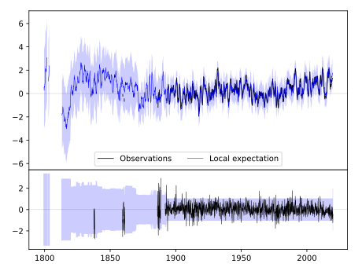
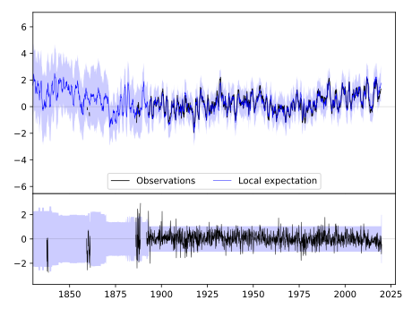
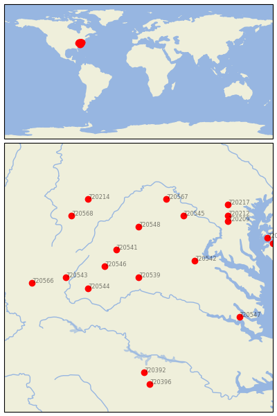

CHARLOTTESVILLE 2W [USA]


| Neighbour | Name | Country | Distance | Lon/Lat | Years |
|---|
| 720539 | CHARLOTTESVILLE 2W | USA | 0 | -78.5, 38.0 | 1837-2019 |
| 720546 | STAUNTON WATER TRMTM | USA | 56 | -79.1, 38.2 | 1893-2019 |
| 720541 | DALE ENTERPRISE | USA | 65 | -78.9, 38.5 | 1893-2019 |
| 720544 | LEXINGTON | USA | 82 | -79.4, 37.8 | 1861-2019 |
| 720542 | FREDERICKSBURG NP | USA | 93 | -77.5, 38.3 | 1893-2019 |
| 720548 | WOODSTOCK 2 NE | USA | 100 | -78.5, 38.9 | 1893-2019 |
| 720543 | HOT SPRINGS | USA | 113 | -79.8, 38.0 | 1892-2019 |
| 720545 | LINCOLN | USA | 140 | -77.7, 39.1 | 1893-2019 |
| 720568 | PARSONS 1 NE | USA | 160 | -79.7, 39.1 | 1878-2019 |
| 720567 | MARTINSBURG E WV RGN | USA | 161 | -78.0, 39.4 | 1891-2019 |
| 720566 | LEWISBURG 3 N | USA | 166 | -80.4, 37.9 | 1893-2019 |
| 720214 | OAKLAND 1 SE | USA | 174 | -79.4, 39.4 | 1877-2019 |
| 720547 | WILLIAMSBURG 2 N | USA | 176 | -76.7, 37.3 | 1893-2019 |
| 720209 | BELTSVILLE | USA | 178 | -76.9, 39.0 | 1893-2019 |
| 720212 | LAUREL 3 W | USA | 185 | -76.9, 39.1 | 1893-2019 |
| 720392 | HENDERSON 2 NNW | USA | 189 | -78.4, 36.3 | 1892-2019 |
| 720217 | WOODSTOCK | USA | 200 | -76.9, 39.3 | 1870-2019 |
| 720396 | LOUISBURG | USA | 212 | -78.3, 36.1 | 1891-2019 |
| 720216 | ROYAL OAK 2 SSW | USA | 215 | -76.2, 38.7 | 1891-2019 |
| 720208 | CAMBRIDGE WATER TRMT | USA | 219 | -76.1, 38.6 | 1893-2019 |